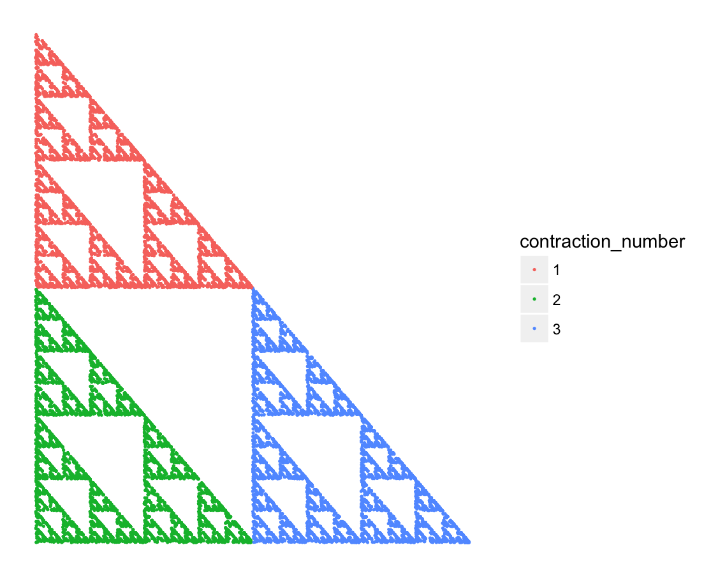

IFS586
Szymon Górka Justyna Zagórwoicz
2018-01-07
IFS586 package creates fractals by method IFS. The package contains the following functionalities: - creates object S3 form contraction functions - plot fractals from object IFS_S3
Examples
Pakcage contaons varius examples of fractals constructed by method IFS.
Sieprinski triangle
First define contractions functions and probability vector
trian1 <- function(x,y) {
x<-0.5*x - 0.5
y<-0.5*y + 0.5
return(c(x,y))
}
trian2 <- function(x,y) {
x<-0.5*x - 0.5
y<-0.5*y - 0.5
return(c(x,y))
}
trian3 <- function(x,y) {
x<-0.5*x + 0.5
y<-0.5*y - 0.5
return(c(x,y))
}
trianp <- c(0.3333, 0.3333, 0.3334)
sierpinski_triangle <- createIFS(trian1, trian2, trian3, prob_vec=trianp)The you can use overloaded function plot:
plot(sierpinski_triangle, n=15)